Permisos de Circulación
Funciones del sistema
Al presionar sobre el ícono de Permisos de Circulación de la pantalla principal de la plataforma, se accederá a sistema que los gestiona. Desde él se podrán realizar las siguientes acciones:
- Mantenimiento de movimientos:
- Consultar, modificar y crear registros de propietarios.
- Consultar, modificar y crear registros de vehículos.
- Calcular permisos de circulación.
- Consultar permisos de circulación emitidos.
- Exportación de comprobantes de pago en formato PDF.
- Exportación de registros en formato Microsoft Excel y texto plano.
- Configuración del sistema:
- Compañías de seguros.
- Ítems de multas de contabilidad.
- Marcas de vahículos.
- Administración de placas bloqueadas.
- Plantas de revisión técnica.
- Tipos de sellos.
- Tipos de vehículos.
- Trámites.
- Tramos de tasaciones.
- Exportación de informes en formato PDF.
- Módulos para el administrador del sistema:
- Actualización de multas con archivo SRCel.
- Actualizar multas pagadas.
- Actualizar número de ingreso multas pagadas - SIFIM.
- Anular pago de permisos.
- Multas pagadas en otro Municipio y anulación de pago.
- Parámetros anuales pagos.
Las distintas secciones del sistema se encuentran en la barra lateral de opciones, situada a la izquierda de la pantalla:
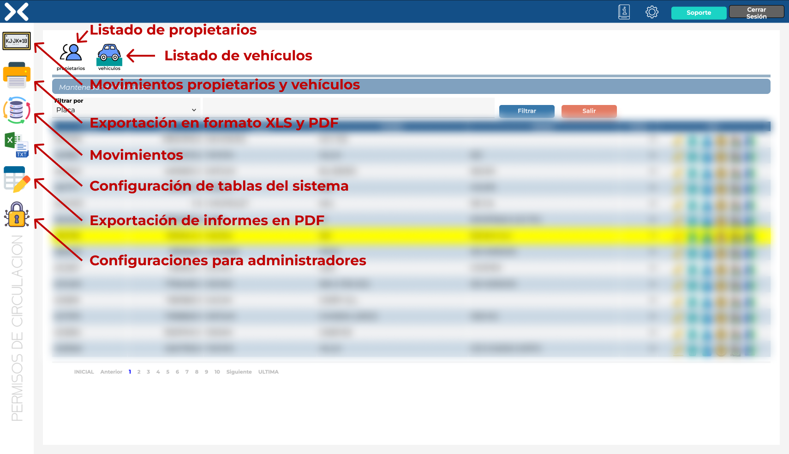
Secciones del sistema de Permisos de Circulación
Propietarios y vehículos
Se trata de la primera sección de la barra lateral y a la que se accede por defecto al entrar al sistema de Permisos de Circulación. Desde esta parte del sistema se pueden consultar los permisos de circulación. La información se encuentra estructurada en base a propietarios y en base a vehículos, que corresponden con las dos pestaás superiores:
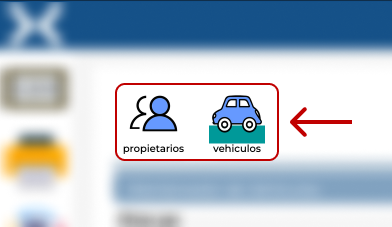
Pestañas principales de sección de propietarios y vehículos
Al acceder a Permisos de Circulación, la información estará mostrada en base a vehículos, el sistema permite:
- Filtrar los elementos de la tabla, buscando por placa, RUT o marca.
- Para cada uno delos registros de la tabla se puede:
- Editar los datos del vehículo.
- Eliminar el registro.
- Consultar los datos del propietario.
- Consultar sus permisos de circulación.
Debajo de la tabla, en la zona izquierda, se sitúa el navegador de páginas de la tabla.
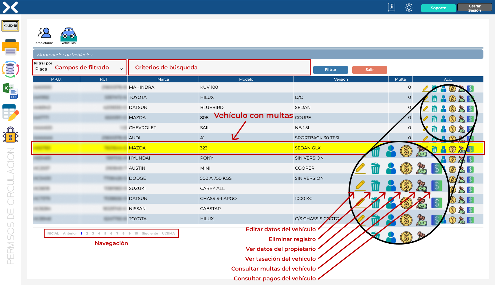
Pantalla de Permisos de Circulación según vehículos
Editar datos del vehículo
Al presionar sobre el ícono de edición del registro, se podrá acceder a los datos del vehículo para su consulta o modificación:
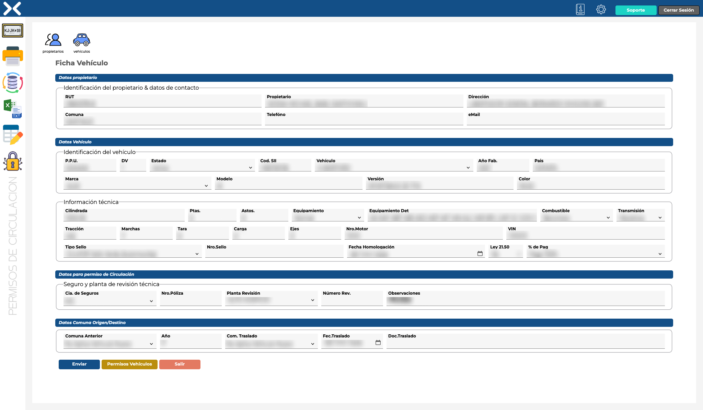
Formulario de detalle de ficha de vehículo
Datos del propietario
Al pulsar sobre el ícono del propietario del vehículo, se desplegará un formulario que permite ver el propietario actual del vehículo así como asignarle uno nuevo. Para indicar un nuevo propietario, se debe introducir el RUT del nuevo dueño y el sistema completará automaticamente el dígito verificador y el nombre completo.
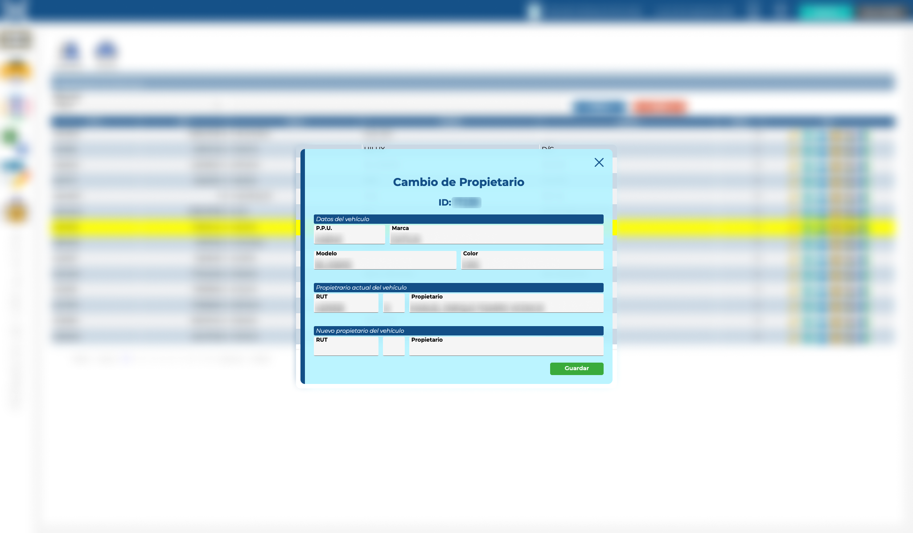
Desplegable con los datos básicos del vehículo y propietario
Consulta de permisos de circulación
Al acceder a los datos, desde el botón "Permisos Vehículos", del permiso de circulación se podrán consultar los datos del vehículo así como establecer los parámetros para la emisión del siguiente permiso de circulación. La información está clasificada en tres grupos:
- Identificación vehículo & propietario: datos básicos de identificación del vehículo y su propietario.
- Datos cálculo permiso: parámetros de cálculo del permiso de circulación del vehículo. Dentro de esta sección se disponen las siguientes opciones:
- Calcular permiso: calcula el importe del permiso de circulación.
- Envía ingreso: envía el ingreso a Tesorería Municipal para proceder al pago y emite el permiso de circulación.
- Pagar c/ convenio: genera pagos acogidos al convenio de pago de acuerdo con la ley.
- Pagado en tercero: para emisión de permisos de circulación pagados en otra Municipalidad.
- Historial pagos: acceso al historial de permisos de circulación emitidos para el vehículo. Pulsando en el ícono de la impresora (en la columna acciones) se pueden visualizar en la zona derecha de la pantalla.
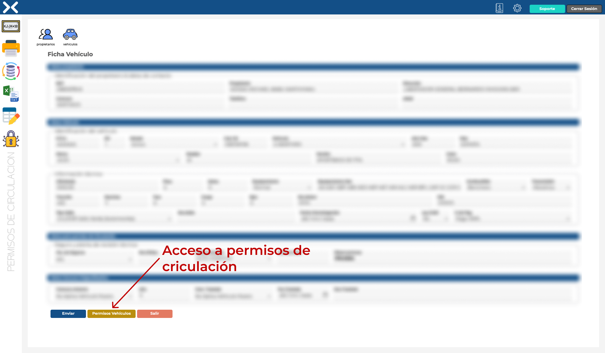
Botón de acceso a permisos de circulación
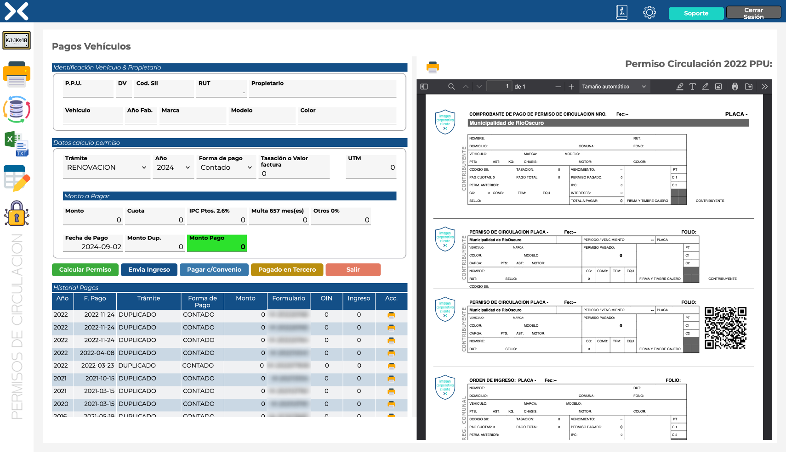
Detalle de permisos de circulación del vehiculo
Consulta por propietarios
Al pulsar el pestaña de Propietarios se accederá al Mantenedor de Propietarios, en la que se presentará una tabla con todos los propietarios del sistema.
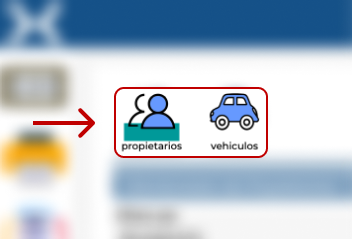
Selección de pestaña de propietarios
En Mantenedor de Propietarios se dispone de las siguientes herramientas:
-
Filtrado por:
- Nombre del propietario.
- RUT.
- Alta de un nuevo propietario.
- Tabla con la información de los propietarios: RUT, nombre y dirección.
-
Columna de acciones (a la derecha):
- Edición: apertura de un formulario que permite consultar y editar los datos del propietario.
- Eliminar: borrado del registro.
- Vehículos: consulta de lo vehículos asociados al propietario. Al presionar este botón, se accederá al listado de vehículos con las herramientas vistas anteriormente, filtrado por el propietario seleccionado.
Debajo de la tabla, en la zona izquierda, se sitúa el navegador de páginas de la tabla.
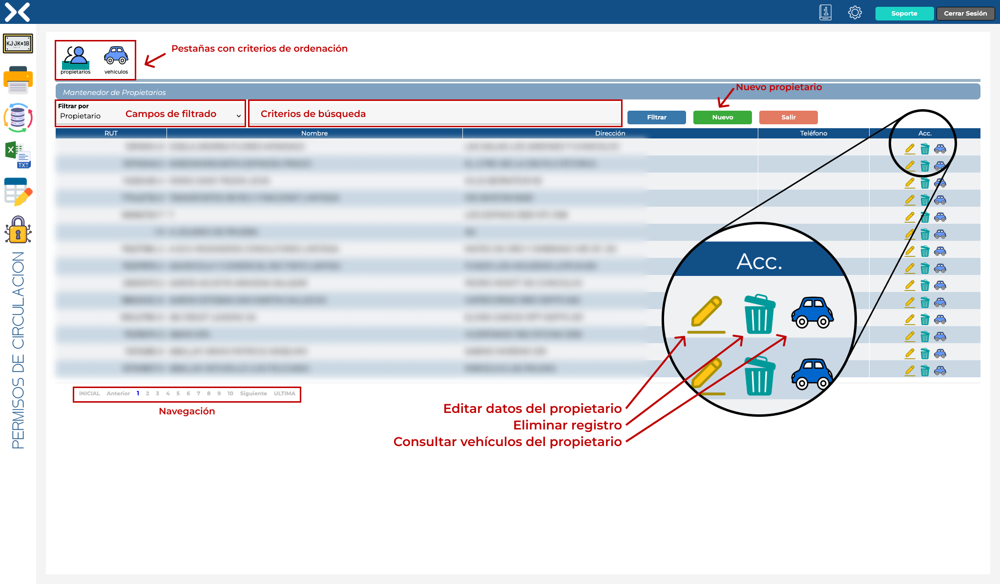
Pantalla de Permisos de Circulación según propietarios
Exportación a XLS/Texto plano
En la sección de exportación de información del sistema se ponen a disposición de los usuarios las siguientes configuraciones:
-
Exportación archivos SEM:
- SEM2 - BDUN: planilla Excel con Base de Datos Única Nacional.
- SEM2 - Locomoción Colectiva: planilla Excel con locomoción colectiva.
- SEM2 - Vehículos livianos: planilla Excel con vehículos livianos.
- SEM2 - Vehículos pesados: planilla Excel con vehículos pesados.
-
Exportación:
- INE: planilla Excel con información del Instituto Nacional de Estadísticas.
- Ingresos Diarios: planilla Excel con ingresos diarios por rangos de fechas seleccionados.
- PDI: archivo Excel por fechas.
- RNMT: archivo de texto plano para el registro nacional de multas de tránsito.
- RNMT otros Municipios: archivo de texto plano.
- Ingresos Subdere: ingresos por permisos SUBDERE por rango de fechas.
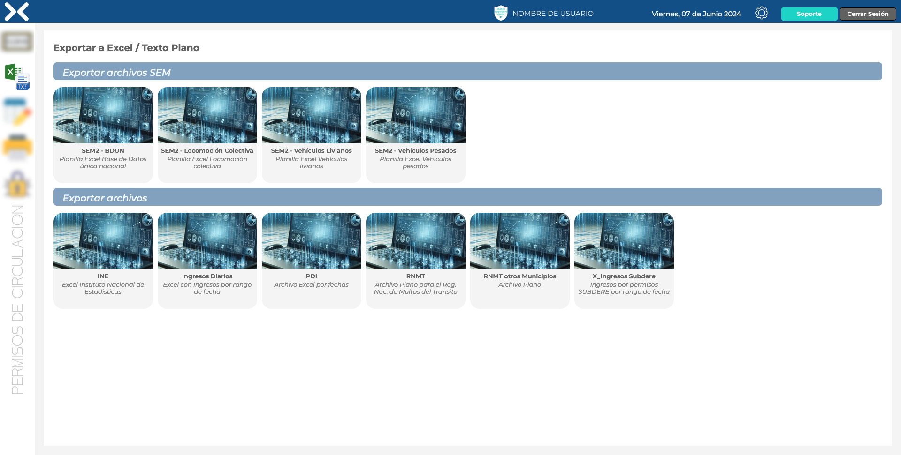
Pantalla de exportación de informes
Al presionar sobre los respectivos informes se abrirá un formulario para indicar los parámetros de exportación del documento, como el rango de fechas.
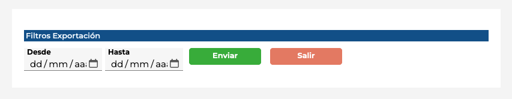
Formulario de parametrización de exportación
Configuración tablas del sistema
Esta sección es la dedicada al mantenimiento de las tablas del sistema, en las cuales se pueden actualizar los valores disponibles para los diferenetes rangos de seleccionables o categorizaciones dentro del sistema, tales como:
- Compañías de seguros.
- Ítems de multas de contabilidad.
- Marcas de vahículos.
- Placas bloqueadas.
- Plantas de revisión técnica.
- Tipos de sellos.
- Tipos de vehículos.
- Trámites.
- Tramos trasaciones.
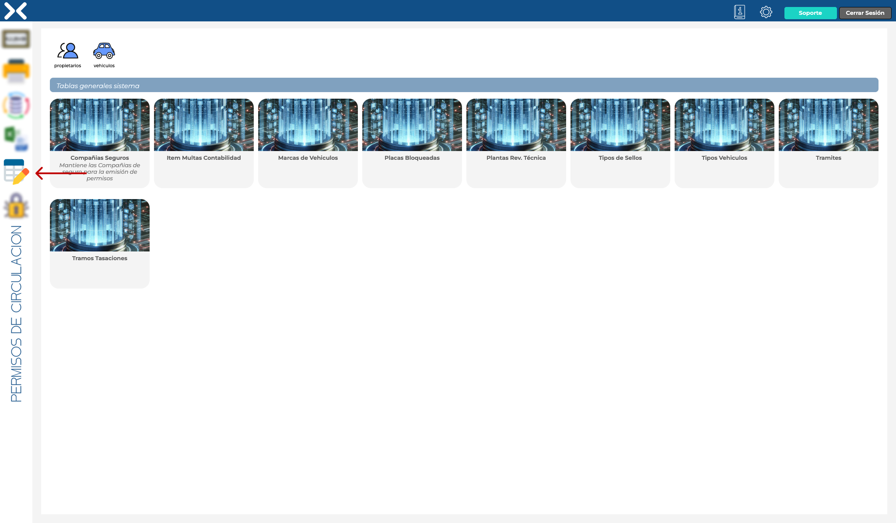
Listado de tablas disponibles para configuración
Al acceder a uno de los menús de configuración se abrirá una tabla con los parámetros correspondientes a dicha opción. En esta pantalla se dispondrá de:
- Campos de filtrado.
- Alta de nuevas opciones.
- Edición y borrado de registros.
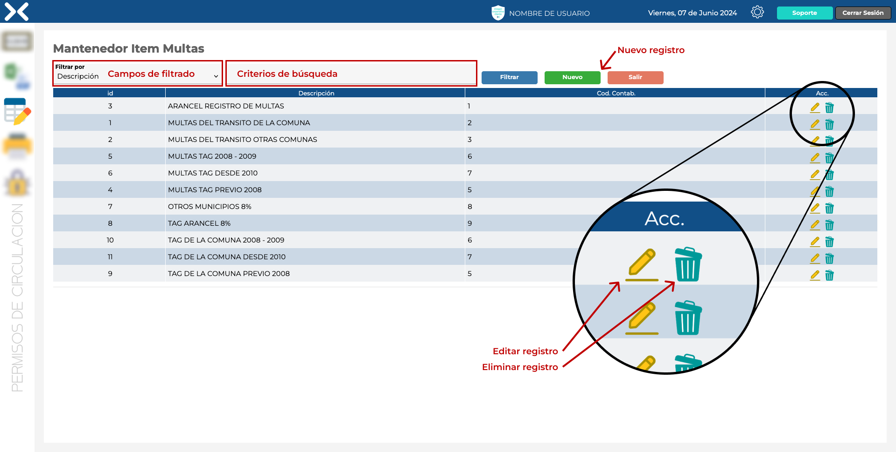
Configuración de registros
Al presionar sobre el botón de "Nuevo" se abrirá un formulario para poder realizar el registro, en caso de pulsar el botón de edición se abrirá con los campos con los valores correspondientes.
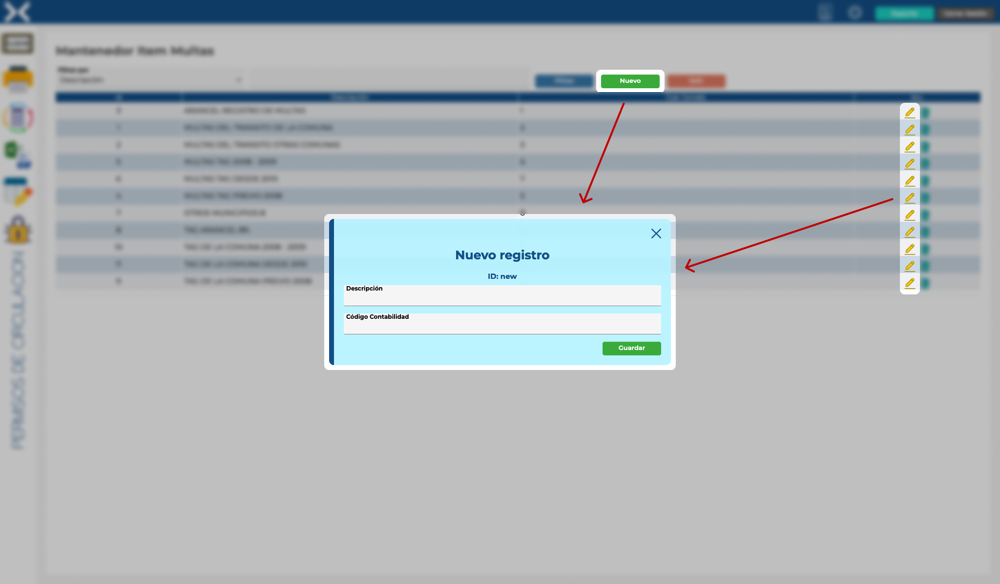
Fila de edición de registro activa
Informes
En esta sección del sistema de Permisos de Circulación se encuentran predefinidos informes para su exportación en formato PDF, ordenados en dos grupos:
-
Informes:
- Histórico de permisos.
- Vehículos de la comuna.
- Vehículos de otras comunas.
- Vehículos por placa.
- Vehículos sin Código SII.
- Traslados por fecha.
-
Informes de control:
- Fondo de terceros.
- Ingresos diarios.
- Ingresos diarios por usuario.
- Morosos pago 2da cuota.
- Multas por pagar.
- Pagos primera cuota.
- Pagos segunda cuota.
- Pagos totales.
- Permisos anulados.
- Permisos por periodo de pago.
- Primer permiso factura.
- Recibidos desde SUBDERE.
- Resumen fondo terceros.
La pantalla de esta sección de la aplicación se encuentra divida en dos secciones, en la mitad izquierda se muestra el listado de informes disponibles y, en la mitad derecha, se muestra una previsualización del informe generado previo a su descarga en formato PDF.
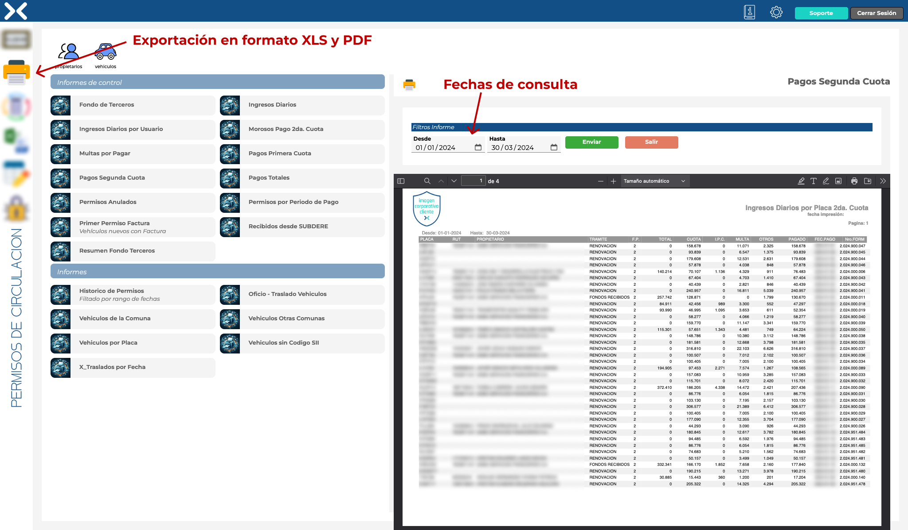
Sección de informes de Permisos de Circulación
Módulos de administrador de sistema
En este menú se encuentran la funciones que se reservan para los usuarios con privilegios de administrador:
- Actualización multas con archivo SRCel.
- Actualizar multas pagadas.
- Actualizar número ingreso multas pagadas - SIFIM.
- Actualizar número ingreso permisos - SIFIM.
- Anular pago permiso.
- Multas pagadas en otro municipio y anular pago.
- Parámetros anuales pagos.
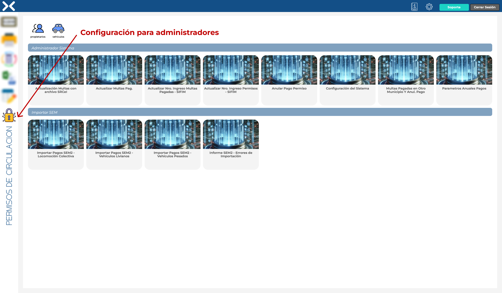
Herramientas para administradores